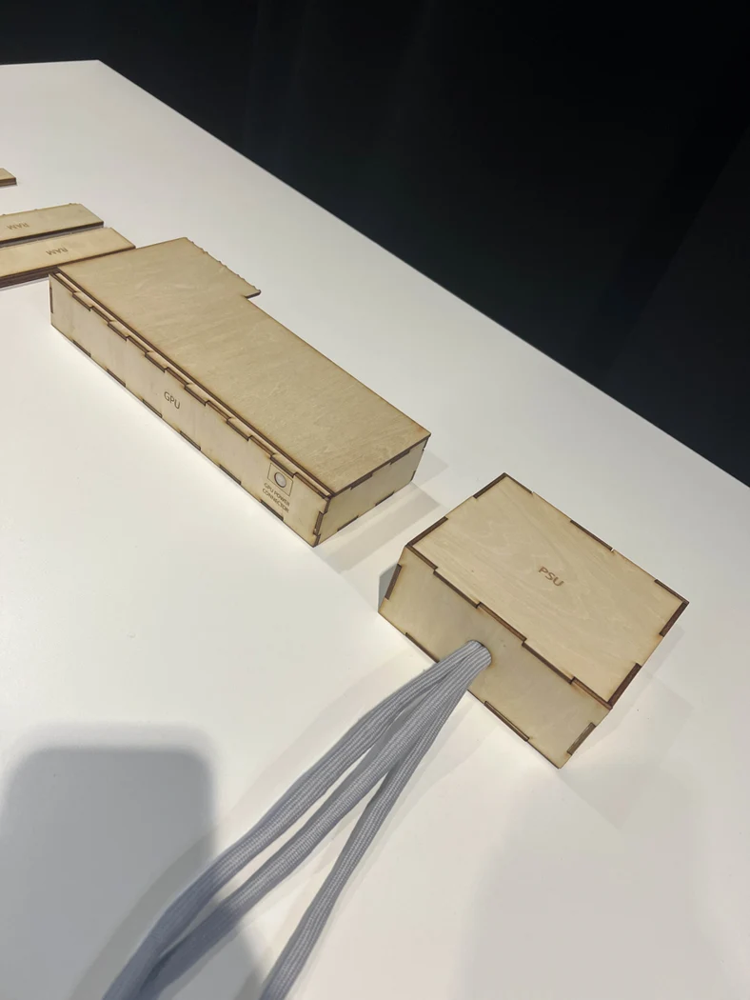
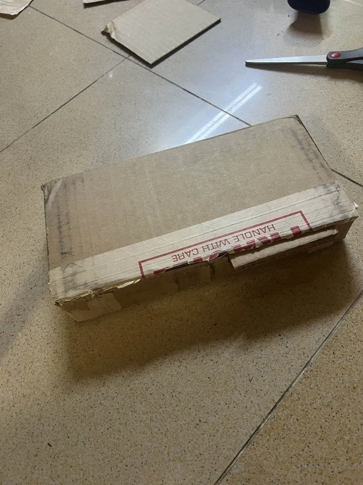
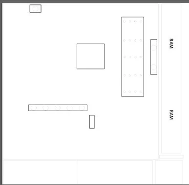
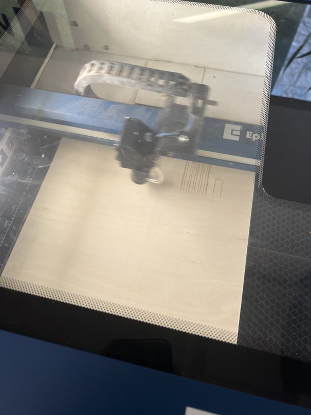
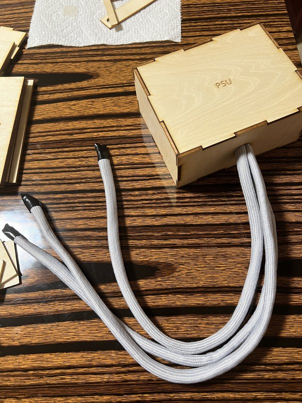
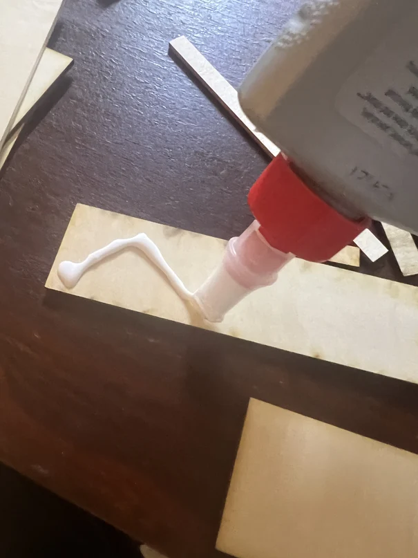

Independent project · Fall 2024
Building Blocks of a PC
Learn where desktop PC components go by assembling a model.
I translated real component dimensions into a laser-cut plywood kit and used magnets to guide how selected parts fit.

01 / Design goal
Make a first PC build approachable.
I designed an assembly activity for ages eight and up. Visitors could learn which parts belong inside a desktop, where they fit, and which way they face before handling real hardware.
02 / Fabrication
Make orientation part of the interaction.
I researched component dimensions, made cardboard studies, and laser cut the parts from birch. I laser engraved labels to identify the pieces and positioned magnets so selected parts would only seat in the intended orientation. Layered lanyard material stood in for cables.





03 / Showcase
Let visitors try the build.
Visitors tried assembling the model at the showcase. Some glued magnets came loose during handling. My next test would compare a mechanically captured magnet with the glued attachment and check how each holds up over repeated assembly.